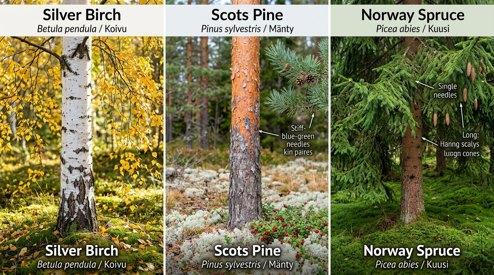

03. Seasonal Calendar & Forest Ecology of Uusimaa
To find mushrooms consistently around Helsinki, you must understand two biological fundamentals: Finnish Forest Habitat Types (the host trees and soil conditions) and Phenology (the seasonal timing dictated by temperature, day length, and rainfall).
1. Forest Ecology & Cajander's Forest Site Types
Finnish foresters and botanists classify forests using the Cajander site type classification, based on understory ground vegetation. Each site type fosters specific mycorrhizal (root-symbiotic) fungi:
[ Rich Deciduous Grove ] --> [ Mesic Spruce Heath ] --> [ Dry Pine Heath ] --> [ Peatland Bog ]
(Lehto) (Tuore kangas) (Kuiva kangas) (Räme / Korpi)
Hazel, Oak, Birch Norway Spruce, Moss Scots Pine, Lichen Sphagnum, Alder
Black Trumpets, Ceps Chanterelles, Porcini Pine Boletes, Cow Fungi Bog Russulas, Birch Boletes
A. Lehto (Herb-rich Deciduous Groves)
- Soil & Light: Nutrient-dense, damp, rich humus, alkaline to neutral pH. Filtered sunlight beneath broadleaved canopies.
- Canopy & Undergrowth: Silver birch (Betula pendula), European hazel (Corylus avellana), aspen (Populus tremula), pedunculate oak (Quercus robur), wood anemone (valkovuokko), spring pea.
- Where to find around Helsinki: Keskuspuisto (Maunula hazelnut groves), Petikko (Vantaa), Tammisto nature reserve borders.
- Signature Mushrooms:
B. Tuore kangas (Mesic Spruce-Blueberry Heath - Myrtillus type)
- Soil & Light: Acidic podzol, thick moisture-retentive carpet of red-stemmed feather moss (Pleurozium schreberi) and stair-step moss (Hylocomium splendens).
- Canopy & Undergrowth: Norway spruce (Picea abies), mixed with scattered birch. Dominated by European blueberry / bilberry (Vaccinium myrtillus / mustikka).
- Where to find: Sipoonkorpi, Nuuksio ravines, Luukki, Pitkäkoski.
- The Capital Region's Mushroom Motherlode:
C. Kuiva kangas (Sub-xeric Pine-Lingonberry Heath - Vaccinium type)
- Soil & Light: Coarse sand, gravelly glacial moraine, rapid drainage, bright open canopy.
- Canopy & Undergrowth: Scots pine (Pinus sylvestris), lingonberry (Vaccinium vitis-idaea / puolukka), heather (Calluna vulgaris), and silvery reindeer lichens (Cladonia / jäkälä).
- Where to find: Uutela coastal ridges, Salmen ulkoilualue, rocky ridges of Nuuksio.
- Signature Mushrooms:
D. Korpi & Räme (Spruce Mires & Peatland Bogs)
- Soil & Light: Waterlogged peat, perpetual dampness, spongy Sphagnum moss pillows.
- Canopy & Undergrowth: Stunted Scots pine, downy birch (Betula pubescens), bog bilberry (juolukka), Labrador tea (suopursu).
- Where to find: Sipoonkorpi bog edges, Nuuksio peat valleys.
- Signature Mushrooms:
2. Month-by-Month Foraging Calendar in Southern Finland
May Jun Jul Aug Sep Oct Nov
|----------|----------|----------|----------|----------|----------|
[Korvasieni]
[Kantarelli starts]
[Tatit / Porcini explosion]
[Peak Diversity: All Species]
[Suppilovahvero / Late Autumn]
May – Early June: The Spring Anomaly
- Target: False Morel (Gyromitra esculenta / korvasieni).
- Habitat: Disturbed sandy pine soil, clearcuts, logging tire ruts.
- Crucial Caution: Gyromitra esculenta contains gyromitrin, a lethal volatile toxin that metabolizes into monomethylhydrazine (rocket propellant). In Finland, it is traditionally parboiled twice with vigorous ventilation. Not recommended for novices.
July: The Midsummer Awakening
- Weather Factor: Needs warm summer rains. If July is dry, fungi stay dormant.
- Targets:
- Forager Tip: Inspect south-facing hillsides where sunlight warmed the forest floor first.
August: The Grand Flush (The Boletes & Russulas)
- Prime Conditions: Warm nights (>12°C) combined with heavy late-summer thunderstorms.
- Targets:
September: The Golden Peak of Mycology
- The undisputed crown month of Finnish foraging: Over 50 edible species fruit concurrently.
- Targets:
October – Mid-November: The Late Frost-Resistant Season
- Weather: Night frosts begin (0°C to -4°C), deciduous leaves drop, forest quietens.
- The Star: Funnel Chanterelle (Craterellus tubaeformis / suppilovahvero).
3. Forager's Field Tip: The Chanterelle Dilemma & Host Tree Identification
This is one of the most common dilemmas for autumn foragers in Finland. While foraging pressure is real, the clock on the wall (morning vs. afternoon) is rarely the culprit. Mushrooms grow slowly over several days to weeks. The real answers lie in seasonality, micro-habitat divergence, and tree symbiosis.
A. The Three Decisive Factors
- Calendar Phase (Late Peak vs. Residual Tail):
- The "Room" in the Forest (Spruce Bog vs. Birch/Pine Rim):
- Visibility & Weekly (Not Daily) Pressure:
B. Tree Identification: Silver Birch vs. Scots Pine vs. Norway Spruce
Recognizing your forest canopy is the single greatest skill for locating specific mushrooms. In Finland, the "Big Three" trees dictate virtually all mushroom distribution: Golden chanterelles partner with birch and pine; Pine boletes partner with pine; while Funnel chanterelles and hedgehogs carpet the moss under spruce.

(c) Botanical field guide - Left: Silver Birch (Betula pendula / Koivu) • Center: Scots Pine (Pinus sylvestris / Mänty) • Right: Norway Spruce (Picea abies / Kuusi)
| Diagnostic Feature | Silver Birch (Betula pendula / Rauduskoivu) | Scots Pine (Pinus sylvestris / Mänty) | Norway Spruce (Picea abies / Kuusi) |
|---|---|---|---|
| Bark Texture | Pure chalk-white papery bark with dark horizontal lenticels; develops deep, rough black diamond-shaped fissures at trunk base. | Distinctive two-toned trunk: warm reddish-orange / cinnamon flaky bark on the upper two-thirds; thick, dark grey-brown scaly plates at the base. | Rough, scaly, uniform reddish-brown to grey-brown bark throughout the trunk. |
| Foliage / Needles | Broadleaf: triangular/diamond-shaped serrated leaves that turn radiant golden-yellow in autumn. | Conifer: stiff, blue-green needles growing in pairs (clusters of two), 4–7 cm long. Woody rounded cones. | Conifer: short, sharp, stiff 4-angled needles growing singly around twigs. Long hanging cylindrical cones. |
| Canopy & Light | Open, weeping, light-dappled canopy. Allows abundant warmth and sunlight to reach the ground. | High, airy, sparse crown. Forest floor remains bright and dry. | Dense, conical, heavily shaded pyramid crown. Forest floor is dark and humid. |
| Forest Floor | Grassy hummocks, light moss, fallen golden leaves, rocky soil (lehto / tuore kangas). | Dry sandy/gravelly moraine, silvery reindeer lichens (jäkälä), lingonberry (puolukka), heather (kuiva kangas). | Deep, continuous sponge carpet of green feathermoss (Hylocomium), bilberry (mustikka). |
| Associated Mushrooms | Golden Chanterelle, King Bolete, Orange Birch Bolete (punikkitatti), Brown Birch Scaber Stalk. | Pine Bolete (männynherkkutatti), Saffron Milkcap (leppärousku), Rufous Milkcap (kangasrousku), Velvet Bolete. | Funnel Chanterelle (suppilovahvero), Wood Hedgehog (orakas), King Bolete, Deadly Webcap (myrkkyseitikki). |
C. Late-Season Tactics to Find Golden Chanterelles in September
If you want golden chanterelles right now, shift your strategy:- Leave the Dark Spruce Woods: Walk out of the deep spruce hollows toward birch groves, forest margins, and open south- or west-facing slopes where autumn sunshine still warms the soil.
- Follow Dirt Paths & Rock Rims: Check the compressed edges of tractor tracks, footpath verges, and the borders where mossy granite rock outcrops (kallio) meet young birch and pine trees.
- Look for Moss Hummocks: In late autumn, golden chanterelles often fruit semi-submerged under moss and birch leaves. Look for slight rounded humps in the moss—gently lift them with your fingers to discover fat, pale yellow buttons underneath.
- Mark the Spot: Chanterelle mycelium is perennial and stable. Unlike boletes, a chanterelle patch will produce in the exact same spot year after year for decades. Save the GPS pin!